Generalized linear mixed models
Introduction
Generalized linear mixed models combine the features of generalized linear models (modelling non-normally distributed variables, especially binary and count data) and linear mixed models (modelling grouped data). Here, we will first review concepts seen in the prerequisite course, before discussing the particularities of GLMM in terms of parameter estimation, model evaluation and comparison.
Contents
Revision: generalized linear models and linear mixed models
Generalized linear mixed models (GLMM): mathematical form and estimation techniques
Evaluate the fit of a GLMM
Compare different versions of a GLMM
Predictions and simulations from a GLMM
Generalized linear models
When using a linear regression model to explain a random variable \(y\) as a function of predictors \(x_1, ..., x_m\), we assume both a specific relationship between the mean response and the predictors, as well as a specific distribution of the variation of \(y\) around its mean. More precisely:
the mean of \(y\) is a linear function of the \(x_i\): \(\mu = \beta_0 + \sum_{i = 1}^m \beta_i x_i\); and
\(y\) follows a normal distribution of constant standard deviation around this mean: \(y \sim N(\mu, \sigma)\).
Several variables measured in environmental science are poorly represented by this model, notably binary data (e.g. presence/absence, mortality/survival) or count data (e.g. number of individuals, number of species). On the one hand, a linear model of the mean does not include the constraints of these data: the mean probability of presence must be between 0 and 1; the mean number of individuals cannot be negative. On the other hand, the variance of these data is not constant: the presence of a species is more variable if the mean presence is 50% than if it is close to 0 or 1; the variance of count data tends to increase with the mean. Nor is it always possible to transform the data to approach normality and variance homogeneity sufficiently.
Generalized linear models (GLM) help to solve these problems. In a GLM, the linear predictor \(\eta\) (linear combination of predictors) is related to the mean of the response by a link function \(g\):
\[g(\mu) = \eta = \beta_0 + \sum_{i = 1}^m \beta_i x_i\]
and different distributions can be used to represent the variation of \(y\) relative to \(\mu\).
Linear regression is therefore an example of GLM where \(\mu = \eta\) (identity link) and \(y\) follows a normal distribution. Logistic regression, with a logit link and a binomial distribution of the response, is suitable for binary data, while Poisson regression, with a log link and a Poisson distribution, is suitable for count data. The following is a comparative table of those three models:
| Model | Distribution | Default link | Inverse of link |
|---|---|---|---|
| Linear regression | Normal: \(y \sim N(\mu, \sigma)\) | Identity: \(\mu = \eta\) | \(\mu = \eta\) |
| Logistic regression | Binomial: \(y \sim B(n, p)\) | Logit: \(\log(p/(1-p)) = \eta\) | \(p = 1/(1+e^{-\eta})\) |
| Poisson regression | Poisson: \(y \sim Pois(\lambda)\) | Log: \(\log(\lambda) = \eta\) | \(\lambda = e^{\eta}\) |
Poisson regression
The Poisson distribution can be used to represent a response \(y\) that takes integer values greater than or equal to 0. Theoretically, this distribution represents the number of events observed in a given interval (temporal or spatial), when the events are independent of each other.
For example, if \(y\) is the number of customers entering a store during a given one-hour period each day, assuming that each person acts independently, then \(y\) could follow a Poisson distribution.
This distribution contains a single adjustable parameter, \(\lambda\), which is both the mean and variance of \(y\).
\[P(y | \lambda) = \frac{\lambda^y}{y!} e^{-\lambda}\]
As we can see in the graph below, for a small \(\lambda\), the distribution is more skewed (since \(y\) cannot be less than zero); as \(\lambda\) increases, the distribution approaches symmetry and a normal shape.
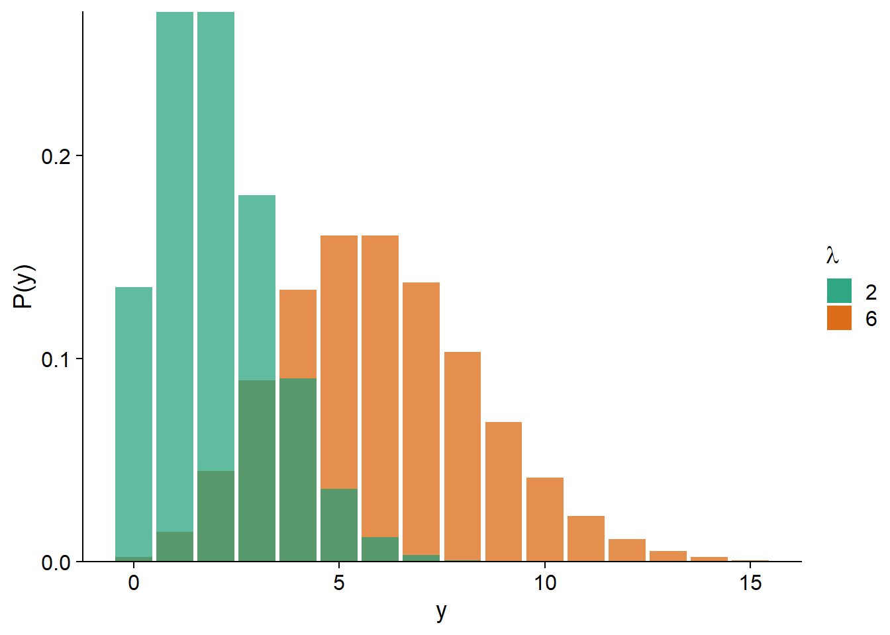
Poisson regression most often uses a logarithmic link:
\[\log{\lambda} = \beta_0 + \sum_{i = 1}^m \beta_i x_i\]
Inverting this link, we find that \(\lambda\) is the exponential of the linear predictor. This ensures that \(\lambda\) is always positive. Since \(e^0 = 1\), a negative value of the linear predictor corresponds to \(\lambda < 1\) and a positive value to \(\lambda > 1\).
\[\lambda = e^{\beta_0 + \sum_{i = 1}^m \beta_i x_i}\]
Also, since the exponential transforms additive effects into multiplicative effects:
\[\lambda = e^{\beta_0} e^{\beta_1 x_1} e^{\beta_2 x_2} \ldots\]
we can interpret the effect of each predictor separately. For example, if \(x_1\) increases by 1, then the mean of the response is multiplied by \(e^{\beta_1}\).
Logistic regression
Suppose a binary response is coded 0/1 (e.g. absence/presence, failure/success). If \(y\) is the number of positive responses (1) among \(n\) independent replicates that share the same probability \(p\) of obtaining a positive response, then \(y\) follows a binomial distribution \(Bin(n, p)\).
\[P(y \vert n, p) = \binom{n}{y} p^y(1-p)^{n-y}\]
The mean of \(y\) equals \(np\) and the variance equals \(np(1-p)\). In practice, this means that the variance is maximal for $p = $0.5 and decreases as \(p\) approaches 0 or 1.
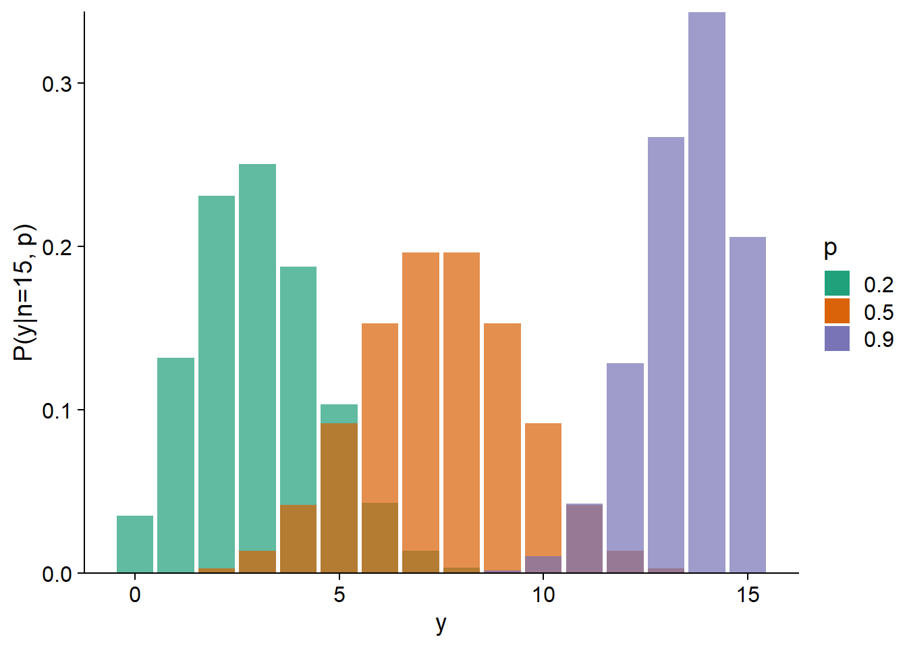
In a regression context, \(n\) is known and we try to estimate how \(p\) varies according to the predictors.
Often, \(n = 1\), that is, we model individual observations of the binary outcome as a function of environmental conditions. Cases where \(n > 1\) are often controlled experiments. For example, if we want to determine the probability of seed germination as a function of soil moisture, we could plant a group of \(n = 20\) seeds for each moisture value; the response \(y\) would be the number of germinations observed out of 20.
Logistic regression gets its name from the fact that a logistic function is used to transform the linear predictor \(\eta\) into a probability \(p\) between 0 and 1.
\[p = \frac{1}{1 + e^{-\eta}}\]
This function takes a value of 0.5 if \(\eta = 0\) and approaches 0 and 1 (without ever reaching them) for very negative and positive values of \(\eta\), respectively.

The inverse of the logistic function is the logit link:
\[\eta = \text{logit}(p) = \log \left( \frac{p}{1-p} \right)\]
Due to the non-linear form of the logistic function, the effect of each predictor on the probability \(p\) is not constant. This effect is maximal around \(p = 0.5\). In other words, the closer we are to conditions where the probabilities of positive and negative responses are equal, the more sensitive this probability is to a variation in the predictors.
\[p = \frac{1}{1 + e^{-(\beta_0 + \sum_{i = 1}^m \beta_i x_i)}}\]
It can be shown that the maximum slope of \(p\) as a function of a predictor \(x_i\), when \(p = 0.5\), is equal to \(\beta_i / 4\).
For example, the graph below shows \(p\) vs. \(x\) for a logistic model where \(\text{logit}(p) = -1 + 0.4x\).
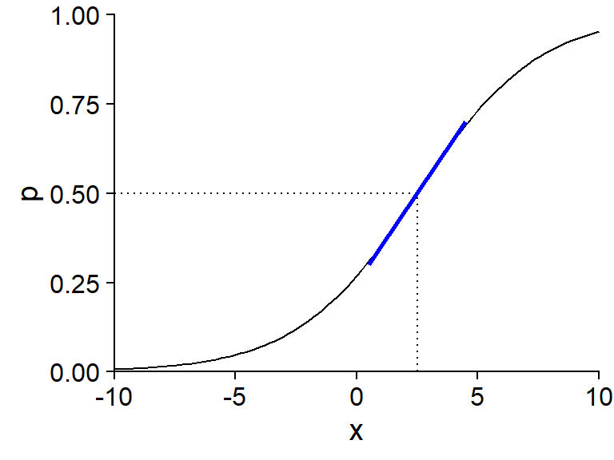
The value of \(x\) for which \(p = 0.5\) is the solution to the equation \(-1 + 0.4x = 0\), so \(x = 2.5\). The slope of \(p\) vs. \(x\) around this point (shown in blue) is \(0.4/4 = 0.1\).
Generalized linear models in R
In R, we use the glm function to fit a generalized linear model. As with lm, we specify a formula of the form response ~ predictors and a dataset data where the variables are found; in addition, glm requires us to specify the family of distributions used (e.g. binomial or poisson).
glm(y ~ x1 + x2 + ..., data = ..., family = binomial)We could also specify the link function: family = binomial(link = "logit"), but this is not necessary if we use the default link (logit for binomial, log for Poisson).
The above code applies to logistic regression if the response variable y contains binary values (0 or 1). If each row summarizes several binary outcomes, then the variables counting the number of positive and negative outcomes, e.g. pos and neg, must be specified as follows:
glm(cbind(pos, neg) ~ x1 + x2 + ..., data = ..., family = binomial)Overdispersion
In a linear regression, the residual variance \(\sigma^2\) is the same for all observations and is estimated independently of the mean trend. For generalized linear models with Poisson or binomial distribution, the variance depends on the mean value (i.e. the predictors for each observation) and this relationship is fixed by the distribution. Thus, the variance is always equal to \(\lambda\) (Poisson) or \(np(1-p)\) (binomial).
By fitting a generalized linear model, it is therefore possible that the mean trend is well represented by the model, but that the residual variance exceeds that predicted by the theoretical distribution. In the graph below, the green histograms represent a Poisson distribution with \(\lambda = 5\) (left) and a binomial distribution with \(n = 15\) and \(p = 0.3\) (right). The histograms in orange represent distributions with the same mean, but with overdispersion.
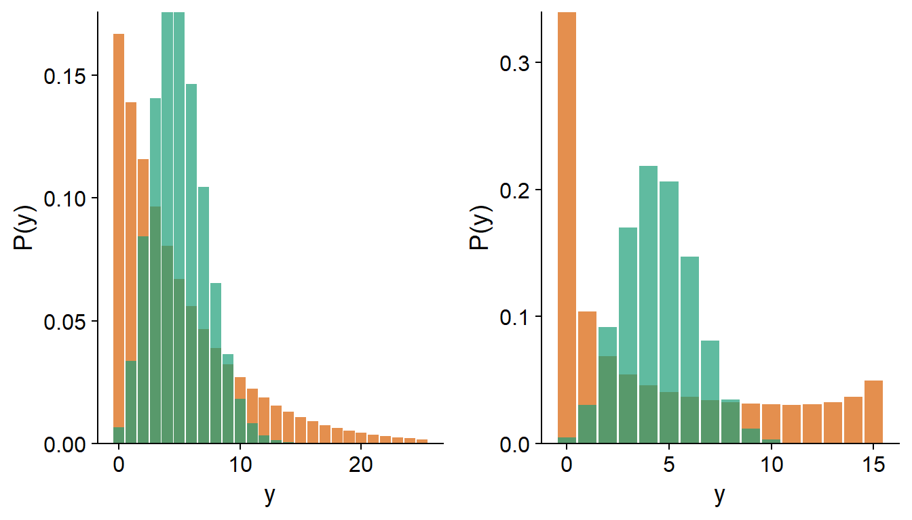
Note: In the case of a logistic regression where the response is binary (i.e. binomial with \(n = 1\)), there can be no overdispersion.
Later in the course, we will discuss methods to identify overdispersion and alternative models for overdispersed data.
Linear mixed models
Consider a simple linear regression for \(n\) observations of a response variable \(y\) and a predictor \(x\). According to this model, the observation \(y_k\) (for \(k = 1, 2, ..., n\)) follows a normal distribution \(N(\mu_k, \sigma_y)\) with a mean \(\mu_k = \beta_0 + \beta_1 x_k\).
Now suppose that the \(n\) observations are grouped together. For example, they could be sampling points spread over a few separate sites; a survey of members of different communities; or repeated measurements of the same individuals at different times. In all of these cases, we expect that the residual variation in response (unexplained by the predictors) will not be independent from one observation to the next. In particular, observations from the same group tend to be more similar than observations from different groups, due to unmeasured factors that vary at the group level rather than at the individual observation level.
A linear mixed model represents this situation by allowing the coefficients of the linear model to vary from one group to another, according to a normal distribution. In the previous model, if \(\beta_0\) and \(\beta_1\) vary from group to group and \(j[k]\) denotes the group \(j\) containing the observation \(k\), then the mean value of this observation in the mixed model is equal to:
\[\mu_k = \beta_{0j[k]} + \beta_{1j[k]} x_k\]
In this model, \(y_k\) follows a normal distribution:
\[y_k \sim N(\mu_k, \sigma_y)\]
and so do the parameters \(\beta_0\) and \(\beta_1\). For example, for the intercept \(\beta_0\):
\[\beta_{0j} \sim N(\mu_{\beta_0}, \sigma_{\beta_0})\]
Mixed models get their name from the fact that they combine fixed effects specified by predictors such as \(x\) with random effects representing the variation between groups. Fitting a linear mixed model would allow us to estimate the mean of the coefficients \(\beta_0\) and \(\beta_1\), the standard deviation of these coefficients across groups, as well as \(\sigma_y\), the standard deviation of individual observations from their group means.
In addition, the mixed model produces estimates of the coefficients for each group, here \(\beta_{0j}\) and \(\beta_{1j}\). A model with a group fixed effect that interacts with \(x\) also produces estimates of the intercept and slope of \(y\) vs. \(x\) for each group. However, such fixed effects are estimated independently based on the data in each group, whereas the random effects of the mixed model are derived from a distribution centred on the mean value of all groups.
Specifically, the mixed model “shrinks” the effects of each group towards the mean effect, as can be seen in the graph below, where each color represents a different group and the regression lines are estimated for random (solid lines) or fixed (dashes) effects at the group level. The slopes of the solid lines are more similar to each other than the slopes of the dashed lines because they are assumed to come from a common distribution.
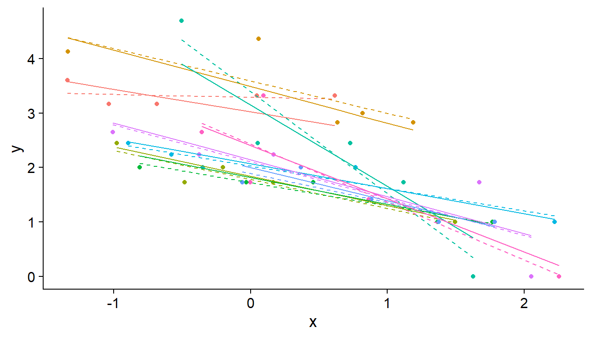
The shrinkage effect is based on the idea that some of the observed differences between groups are due to random sampling rather than actual differences between populations. In particular, more shrinkage occurs when there are few observations in the group, consistent with the fact that a larger portion of the difference is due to chance in the case of a small sample.
As will be discussed later, modelling group random effects also allow us to predict the mean response and its uncertainty for a new group that was absent from the data used to fit the model.
Finally, another advantage of mixed models is that we can include both a random group effect and the effect of a predictor that varies at the group level. For example, the variation in the intercept \(\beta_0\) between groups may depend on the value of a predictor \(u\):
\[\beta_{0j} \sim N(\gamma_0 + \gamma_1 u_j, \sigma_{\beta_0})\]
Since variation in the response is modelled at several levels (group and individual observation), mixed models are also called “hierarchical models”.
For example, suppose we measure plant biodiversity in quadrats located on different disturbed sites. Here, the quadrats are thus grouped by site. In this case, an example of a predictor \(u\) defined at the group level would be the intensity of disturbance at a site, while the predictors \(x_1, x_2, ...\) at the level of individual observations would represent measurements taken in each quadrat.
In summary, mixed models are particularly useful if one or more of the following conditions apply:
the data are grouped or have a hierarchical structure with two or more levels (e.g. plots grouped by sites grouped by region);
the explanatory variables are also defined at multiple levels;
the number of groups is too large, or the number of observations in some groups is too small, to estimate a separate effect for each group;
there is more interest in the variation between groups than in the effect of particular groups;
there is a desire to apply the model to groups where no measurement has been taken.
Mixed linear models in R
In this course, we will use the lme4 package to fit mixed models. The lmer function of this package estimates the parameters of a linear mixed model. The formulas used by lmer follow the form response ~ predictors, with a specific syntax for random effects.
In the following example, g is the variable containing the group identifiers in the data frame df. The term (1 + x | g) tells the function to model a random effect of the group g for the intercept (noted by “1”) and the coefficient of x. If only the intercept varied per group, that is, if the slope of \(y\) vs. \(x\) was set to a single value for all groups, we could write (1 | g).
library(lme4)
lmer(y ~ x + u + (1 + x | g), data = df)Note that predictors defined at the group level (such as u) appear in the formula like any other predictor.
Generalized linear mixed models
Generalized linear mixed models (abbreviated GLMM) combine the features of both types of models seen above.
- As in generalized linear models, different distributions are possible for the response \(y\) and the mean of \(y\) is related to the linear predictor by a link function:
\[g(\mu) = \eta = \beta_0 + \sum_{i = 1}^m \beta_i x_i\]
- As with linear mixed models, the coefficients of the linear predictor vary randomly between groups. Note that this variation always follows a normal distribution.
Example
The rikz.csv dataset, from the textbook of Zuur et al. (see references at the end), presents data on benthic communities for 9 beaches in the Netherlands. Species richness was measured at 5 sites on each of the 9 beaches for a total of 45 observations. The variable NAP measures the vertical position of each site with respect to mean sea level, while the wave exposure index (Exposure) is measured at the scale of a beach.
rikz <- read.csv("../donnees/rikz.csv")
# Convert Beach and Exposure to categorical variables (factors)
rikz <- mutate(rikz, Beach = as.factor(Beach),
Exposure = as.factor(Exposure))
head(rikz)## Sample Richness Exposure NAP Beach
## 1 1 11 10 0.045 1
## 2 2 10 10 -1.036 1
## 3 3 13 10 -1.336 1
## 4 4 11 10 0.616 1
## 5 5 10 10 -0.684 1
## 6 6 8 8 1.190 2Since species richness represents the species count at a site, we can model this response by a Poisson regression, with a fixed effect of the NAP and a random effect of the beach on both coefficients.
The lme4 package contains a glmer function to estimate the parameters of a GLMM. This is similar to lmer, except that we specify the non-normal distribution of the response through the family parameter.
glmm_res <- glmer(Richness ~ NAP + (1 + NAP | Beach), data = rikz, family = poisson)
summary(glmm_res)## Generalized linear mixed model fit by maximum likelihood (Laplace
## Approximation) [glmerMod]
## Family: poisson ( log )
## Formula: Richness ~ NAP + (1 + NAP | Beach)
## Data: rikz
##
## AIC BIC logLik deviance df.resid
## 218.7 227.8 -104.4 208.7 40
##
## Scaled residuals:
## Min 1Q Median 3Q Max
## -1.35846 -0.51129 -0.21846 0.09802 2.45384
##
## Random effects:
## Groups Name Variance Std.Dev. Corr
## Beach (Intercept) 0.2630 0.5128
## NAP 0.0891 0.2985 0.18
## Number of obs: 45, groups: Beach, 9
##
## Fixed effects:
## Estimate Std. Error z value Pr(>|z|)
## (Intercept) 1.6942 0.1868 9.071 < 2e-16 ***
## NAP -0.6074 0.1374 -4.421 9.81e-06 ***
## ---
## Signif. codes: 0 '***' 0.001 '**' 0.01 '*' 0.05 '.' 0.1 ' ' 1
##
## Correlation of Fixed Effects:
## (Intr)
## NAP 0.121According to the Fixed effects section of the summary, the mean intercept is 1.69 and the mean effect of the NAP is -0.61. Since the Poisson regression uses a log link by default, these coefficients mean that the mean richness is \(e^{1.69} = 5.42\) species if NAP = 0 and is multiplied by \(e^{-0.61} = 0.54\) (i.e. decreases by 46%) for every increase of one unit of the NAP. According to the Random effects section, the standard deviation of the intercept between the beaches is 0.51 and the standard deviation of the NAP coefficient is 0.30. If this were a linear mixed model, we would also get an estimate of the residual (within-group) standard deviation, but this is not the case here because the residual variance is fixed by the mean in the Poisson distribution.
The ranef function produces estimates of the difference between the value of a coefficient for each group and its mean value, while coef returns the values of the coefficients per group, thus the sum of ranef and the fixed effects.
ranef(glmm_res)## $Beach
## (Intercept) NAP
## 1 0.5579965 0.39325120
## 2 0.8038562 0.26321427
## 3 -0.4823311 -0.01681456
## 4 -0.4922817 -0.00227238
## 5 0.5590590 -0.40091320
## 6 -0.2740162 0.09140229
## 7 -0.3072758 -0.09381168
## 8 -0.1895568 0.03540481
## 9 0.0541533 -0.18368180
##
## with conditional variances for "Beach"coef(glmm_res)## $Beach
## (Intercept) NAP
## 1 2.252151 -0.2141373
## 2 2.498011 -0.3441742
## 3 1.211824 -0.6242030
## 4 1.201873 -0.6096609
## 5 2.253214 -1.0083017
## 6 1.420139 -0.5159862
## 7 1.386879 -0.7012001
## 8 1.504598 -0.5719837
## 9 1.748308 -0.7910703
##
## attr(,"class")
## [1] "coef.mer"As with generalized linear models, it is useful to plot the non-linear relationship between the response and the predictors estimated by the model. The graph below superimposes the observed data (points) and the fitted model values (lines) for each beach.
ggplot(rikz, aes(x = NAP, y = Richness, color = Beach)) +
geom_point() +
geom_line(aes(y = fitted(glmm_res)))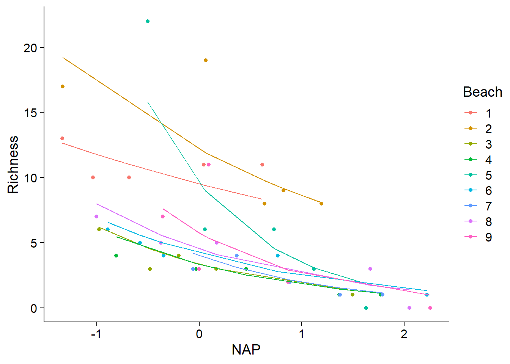
Estimating the coefficients of a GLMM
For a mixed model, the probability of having observed a given value of the response depends not only on the parameters (fixed but unknown), but also on the value of the random effects for the group containing that observation. Thus, in order to calculate the likelihood function for the parameters to be estimated, the probability of the observed data for all possible values of the group random effects must be averaged (mathematically, this is an integral).
In the case of a mixed linear model, the equation becomes simpler and it is possible to estimate separately the fixed effects on the one hand, and the variances associated with the group effects and the residual variation between individuals on the other. The method that applies in this case is a modified version of the maximum likelihood called the restricted maximum likelihood (REML). Without going into detail, the REML estimates the variance parameters based on the model-independent residuals after estimating the fixed effects. In practice, this ensures that the variances are based on the correct number of residual degrees of freedom and corrects for the bias associated with variance estimation by the maximum likelihood method.
For a GLMM, there is no corresponding simplification and several methods have been proposed to numerically approximate the integral contained in the likelihood function. The method that glmer uses by default is the Laplace approximation, which is based on a quadratic approximation of the likelihood function. For models with a single random effect (e.g. the effect of a group variable on the intercept only), glmer offers a more accurate approximation method, the Gauss-Hermite quadrature. To apply this method, a value greater than 1 must be specified for the nAGQ argument of glmer. This argument corresponds to the number of points used to approximate the integral. A higher value is more precise, but requires more calculations; the authors of the package suggest a maximum value of 25.
Confidence intervals
The confint function calculates confidence intervals for each of the parameters of a mixed model, including the coefficients of fixed effects, standard deviations and correlations of random effects.
confint(glmm_res, oldNames = FALSE)## Computing profile confidence intervals ...## 2.5 % 97.5 %
## sd_(Intercept)|Beach 0.30813882 0.9344068
## cor_NAP.(Intercept)|Beach -0.63136889 0.9423103
## sd_NAP|Beach 0.08444686 0.6394023
## (Intercept) 1.27203026 2.0884038
## NAP -0.93296597 -0.3318997Note that it is important to specify oldNames = FALSE to get the correct identifiers for each interval. Those beginning with sd are the standard deviations of the random effects, the one beginning with cor corresponds to the correlation between two random effects, while the last two rows correspond to the fixed effects.
As indicated in the message, confint calculates the intervals from the profiled likelihood. It is also possible to calculate the intervals using the boostrap method by specifying the argument method = "boot" in confint. Note however that these are percentile intervals of the bootstrap and that the more precise methods (studentized intervals and BCa) are not available because of their computational cost.
Model evaluation and comparison
In this section, we will see how to evaluate the goodness of fit of a GLMM and compare the fit of different versions of a model.
Distribution of the residuals
For a linear regression, the diagnostic graphs allowed us to check whether the residuals were normally distributed with a homogeneous variance. These properties of the residuals do not apply to a GLMM with a binomial or Poisson distribution. However, we can test if there is overdispersion of the residuals, which would be indicative of a poor fit of the theoretical model to the data.
If \(\hat{y_k}\) represents the expected value of the observation \(k\) according to the model, the Pearson residual for this observation is obtained by dividing the raw residual by the expected standard deviation of this observation.
\[r_{P(k)} = \frac{y_k - \hat{y_k}}{\hat{\sigma}_{k}}\]
The expected standard deviation is equal to \(\sqrt{\lambda}\) in a Poisson model and \(\sqrt{np(1-p)}\) for a binomial model. If the data follow the assumed model, the sum of the squares of these residuals follows a \(\chi^2\) distribution with a number of degrees of freedom equal to the residual degrees of freedom of the model. This allows us to evaluate the fit of the model with a \(\chi^2\) test.
chi2 <- sum(residuals(glmm_res, type = "pearson")^2)
chi2## [1] 26.402391 - pchisq(chi2, df = df.residual(glmm_res))## [1] 0.9516085A small \(p\)-value for this test would indicate overdispersion of the residuals relative to the model.
We can also define a coefficient of dispersion by dividing the \(\chi^2\) value by the number of residual degrees of freedom.
chi2 / df.residual(glmm_res)## [1] 0.6600598The \(\chi^2\) test is one-sided, because we do not generally care about underdispersion (coefficient of dispersion less than 1). However, an extreme case of underdispersion (\(p\)-value very close to 1) could indicate that the model overfits the data.
The DHARMa package provides a general method for checking whether the residuals of a GLMM are distributed according to the specified model and whether there is any residual trend. The package works by simulating replicates of each observation according to the fitted model and then determining a “standardized residual”, which is the relative position of the observed value with respect to the simulated values, e.g. 0 if the observation is smaller than all the simulations, 0.5 if it is in the middle, etc. If the model represents the data well, each value of the standardized residual between 0 and 1 should be equally likely, so the standardized residuals should produce a uniform distribution between 0 and 1.
The simulateResiduals function performs the calculation of the standardized residuals, then the plot function plots the diagnostic graphs with the results of certain tests.
library(DHARMa)
resid_sim <- simulateResiduals(glmm_res)
plot(resid_sim)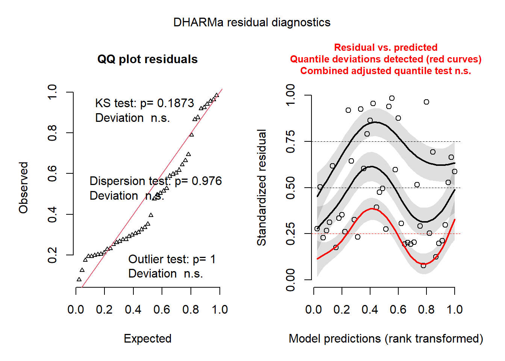
The graph on the left is a quantile-quantile plot of standardized residuals. The results of three statistical tests also also shown: a Kolmogorov-Smirnov (KS) test which checks whether there is a deviation from the theoretical distribution, a dispersion test that checks whether there is underdispersion or overdispersion, and an outlier test based on the number of residuals that are more extreme than all the simulations. In our case, all three results are insignificant, so there is no problem to signal.
On the right, we see a graph of the standardized residuals (in y) as a function of the rank of the predicted values (in x). The plots represent a non-parametric quantile regression for the 1st quartile, the median and the 3rd quartile. In theory, these three curves should be horizontal straight lines (no leftover trend in the residuals vs. predictions). The curve for the 1st quartile (in red) is significantly different from a horizontal line and the presence of a trend (even non-linear) could indicate that an important effect is missing from the model.
For more information on DHARMa, you can read the [package vignette](https://cran.r-project.org/web/packages/DHARMa/vignettes/DHARMa.html.
Distribution of the random effects
It is also useful to verify that the random effects follow an approximately normal distribution. The ranef function produces a list of random effects for each grouping variable. Here, we choose the only grouping variable, Beach.
re <- ranef(glmm_res)$BeachThe variable re is a data frame with two columns representing the random effects of the beaches on the intercept and the coefficient of the NAP. We use a quantile-quantile plot to check whether the values in each column are normally distributed.
qqnorm(re$`(Intercept)`)
qqline(re$`(Intercept)`)
qqnorm(re$NAP)
qqline(re$NAP)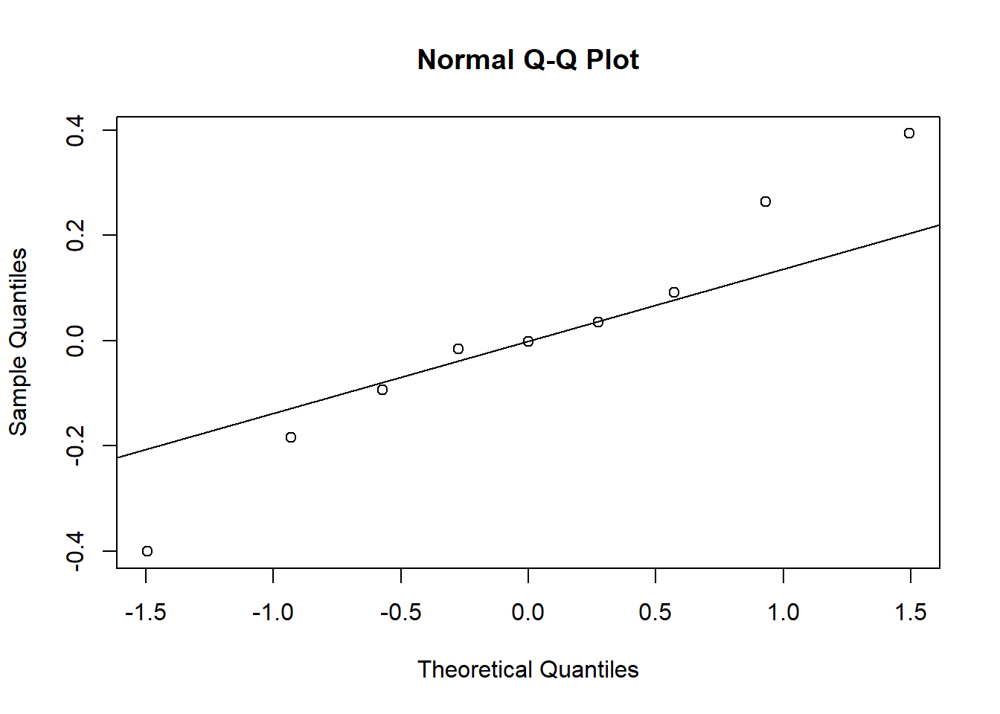
It is difficult to assess normality with only 9 group effects, but the extreme values for the NAP coefficient appear to exceed those of a normal distribution.
Coefficient of determination
In a linear model, the coefficient of determination \(R^2\) indicates the fraction of the variance of the data explained by the model:
\[R^2 = 1 - \frac{\sigma_{\epsilon}^2}{\sigma_t^2}\]
where \(\sigma_{\epsilon}^2\) is the variance of the residuals and \(\sigma_t^2\) is the total variance of the response.
The generalization of \(R^2\) to a GLMM poses two problems:
- the variance of the data in a GLMM depends on the mean;
- for a mixed model, the response varies at several levels (group and individual).
The r.squaredGLMM function of the MuMIn package calculates a version of the coefficient of determination appropriate for GLMMs.
library(MuMIn)
r.squaredGLMM(glmm_res)## R2m R2c
## delta 0.4206307 0.8577819
## lognormal 0.4240694 0.8647945
## trigamma 0.4168256 0.8500224The R2m value represents the marginal \(R^2\), i.e. the variance explained by taking into account only the fixed effects, while R2c represents the conditional \(R^2\), i.e. the variance explained by the fixed and random effects. For a linear mixed model, these \(R^2\) are interpreted directly as a fraction of the variance of the response. For a GLMM, they are based on the variance on the scale of the linear predictor, in other words, the variance of the response transformed by the link function.
The result of the function r.squaredGLMM gives several estimates that are quite similar. According to the authors, the trigamma method is the most accurate, but it is only available for a GLMM with log link.
Model comparison
The comparison of models with the AIC, or AICc for small samples, also applies to GLMMs. For mixed models, the textbook of Zuur et al. (2009) suggests the following method:
First, include all the fixed effects of interest and choose, if necessary, between different versions of the random effects.
Retain the random effects chosen in the previous step and compare different versions of the fixed effects.
This order is motivated by a desire to keep as many fixed effects as possible based on the data, thus reducing the complexity of the random effects before that of the fixed effects.
For linear mixed models, the first step is based on fitting the models by REML, while the second step requires a maximum likelihood fit, because REML can only compare models with the same fixed effects. In the case of GLMM, REML does not apply.
Note: As we will show below, the first step can be used to choose which coefficients to apply random effects to: only the intercept, or the intercept and the predictor coefficients? However, the choice of groups should be based on the structure of the data and not on the selection of models; in other words, if the data are clustered, at a minimum, a random effect on the intercept should be included to account for the non-independence of observations from the same group.
For the rikz dataset, we first define a complete model (glmm1) that includes the effect of a beach-level predictor (Exposure) and the effect of the NAP, in addition to random effects of the beach on the intercept and the coefficient of the NAP. We compare this model to one that includes only a random effect on the intercept.
The aictab function of the package AICcmodavg calculates the AICc for each model in a list and gives their relative weights determined by the differences in AICc.
library(AICcmodavg)
glmm1 <- glmer(Richness ~ Exposure + NAP + (1 + NAP | Beach), data = rikz,
family = poisson)
glmm2 <- glmer(Richness ~ Exposure + NAP + (1 | Beach), data = rikz,
family = poisson)
aictab(list(glmm1, glmm2))##
## Model selection based on AICc:
##
## K AICc Delta_AICc AICcWt Cum.Wt LL
## Mod2 5 211.55 0.00 0.69 0.69 -100.00
## Mod1 7 213.15 1.61 0.31 1.00 -98.06In this case, the simplest model gets the best AICc, so it will be chosen for parsimony, even if the complete model has a very close AICc.
Then we compare the glmm2 model with a model without effect of the Exposure variable.
glmm3 <- glmer(Richness ~ NAP + (1 | Beach), data = rikz,
family = poisson)
aictab(list(glmm2, glmm3))##
## Model selection based on AICc:
##
## K AICc Delta_AICc AICcWt Cum.Wt LL
## Mod1 5 211.55 0.00 0.99 0.99 -100.00
## Mod2 3 221.37 9.82 0.01 1.00 -107.39The model including Exposure produces a much better AICc fit.
Even if a model fits better than other candidate models, this does not mean that the model produces a good fit. To answer this question, we must verify the fit of the selected model with the methods discussed above.
- The graphs of standardized residuals produced by DHARMa show no problems; compared to those of the previous model, the quantile-quantile plot (left) is closer to a straight line and the residuals vs. predicted values graph (right) shows a more random pattern. Note that the red star in the figure on the right represents an extreme value.
plot(simulateResiduals(glmm2))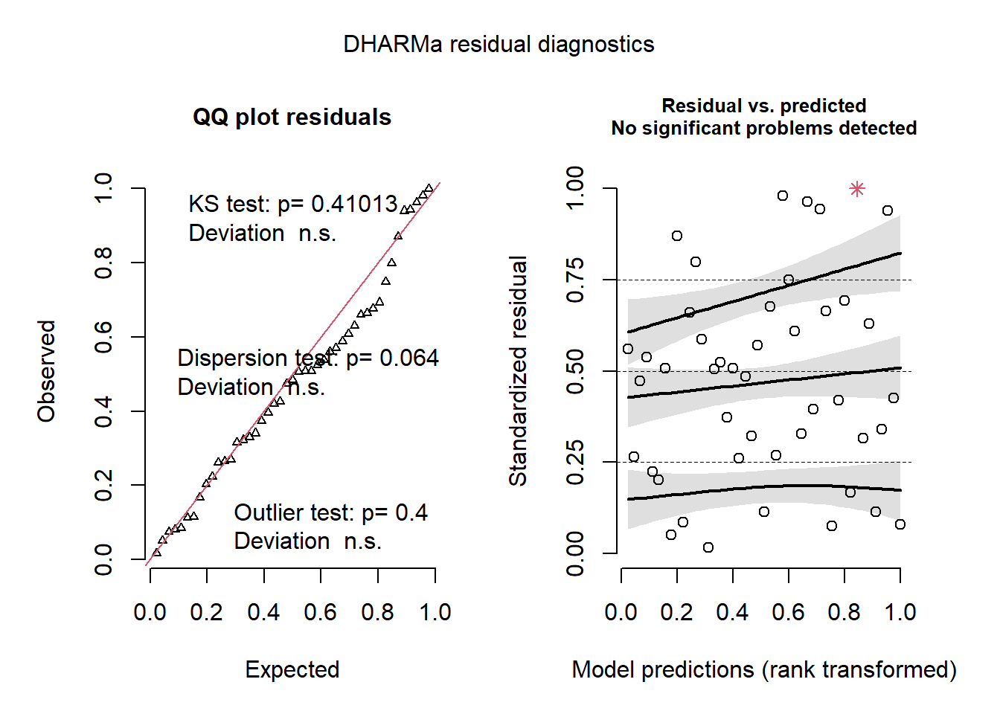
- The random effects of the beach on the intercept are close to a normal distribution, considering the small number of groups.
qqnorm(ranef(glmm2)$Beach$`(Intercept)`)
qqline(ranef(glmm2)$Beach$`(Intercept)`)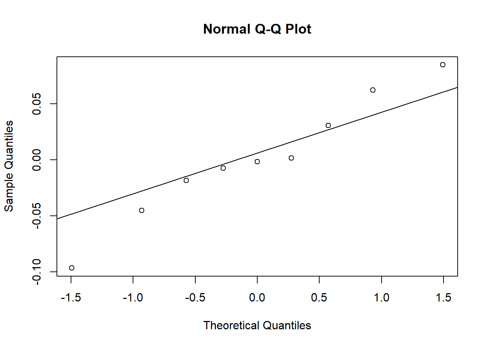
- Finally, the addition of the
Exposurevariable explains much of the differences between the beaches, as the marginal \(R^2\) (fixed effects only) now approaches the \(R^2\) including random effects.
r.squaredGLMM(glmm2)## Warning: The null model is correct only if all variables used by the original
## model remain unchanged.## R2m R2c
## delta 0.7270454 0.7435881
## lognormal 0.7420813 0.7589661
## trigamma 0.7100514 0.7262074Predictions and simulations from a GLMM
Creating a prediction data frame
The predict function, which is available for several types of models in R, returns the value of the response variable predicted by a model for given combinations of the predictor variables.
In the context of GLMM, this function is particularly useful to illustrate the non-linear effect of different combinations of predictors on the response.
As an example, consider the best model chosen in the previous section to explain the variation in species richness in the rikz dataset.
glmm2 <- glmer(Richness ~ Exposure + NAP + (1 | Beach), data = rikz,
family = poisson)To illustrate the effect of predictors, we create a new data frame that contains regularly spaced values of the NAP (from -1.5 to 2.5, in steps of 0.2) for each of the beaches. The function expand.grid is useful in this case because it produces a table with each combination of the variables shown. Note that the function unique(rikz$Beach) produces a vector of the unique values in the Beach column of rikz.
pred_df <- expand.grid(Beach = unique(rikz$Beach),
NAP = seq(-1.5, 2.5, 0.2))We still have to provide the right value of Exposure for each of the beaches. To do this, we use two functions of the dplyr package: distinct chooses the unique combinations of Beach and Exposure present in the rikz data frame (so each of the 9 beaches associated with its exposure index), then inner_join joins these data to pred_df by matching the beach numbers in each row.
library(dplyr)
plages <- distinct(rikz, Beach, Exposure)
pred_df <- inner_join(pred_df, plages)The pred_df data frame now contains all the predictors of the model, which will allow us to predict the specific richness for each case.
Choice of prediction scale
Here is the mathematical form of our Poisson GLMM, with a logarithmic link and a random group effect on the intercept:
\[y \sim \text{Pois}(\lambda) \] \[\log(\lambda) = \beta_0 + \beta_1 x\] \[\beta_{0} \sim N(\gamma_0 + \gamma_{1} u, \sigma_{\beta_0})\]
In this particular case, \(y\) is the site species richness, \(x\) is the NAP and \(\beta_0\) varies between beaches, with a mean depending on the exposure index \(u\) and a standard deviation equal to \(\sigma_{\beta_0}\).
For a GLM or GLMM, the predict function can give a prediction either on the scale of the link function, so here \(\log(\lambda)\), or on the scale of the response, so \(\lambda\). This choice is given by the argument type; by default, type = "link", so if we want the mean richness rather than its logarithm, we must specify type = "response".
pred_df$rich_pred <- predict(glmm2, newdata = pred_df, type = "response")In the example below, we represent these predictions by lines on a graph and then superimpose the points of the original observations. Note that the arguments data and aes(...) are specified in geom_point to get data from another source than the one specified at the beginning of the ggplot statement.
ggplot(pred_df, aes(x = NAP, y = rich_pred, color = Exposure)) +
geom_point(data = rikz, aes(y = Richness)) +
geom_line() +
facet_wrap(~ Beach) +
scale_color_brewer(palette = "Dark2")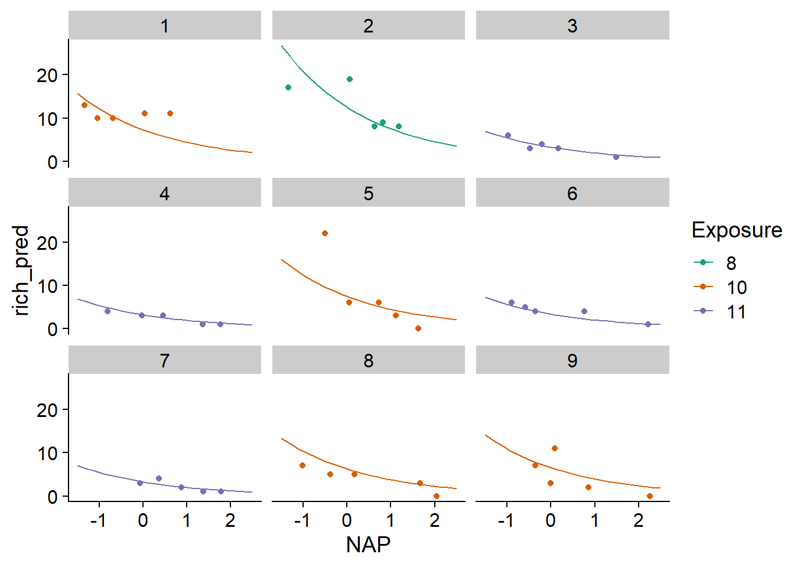
On the graph, we see that the predictions vary from beach to beach, but are more similar for beaches with the same exposure index.
Predictions and random effects
We saw earlier that for a mixed model, we obtain not only an estimate of the variance of the random effects (\(\sigma_{\beta_0}\) in the model above), but also an estimate of the coefficient \(\beta_0\) for each group, which we can consult with coef(glmm2).
By default, the predict function uses the estimated coefficients for each group to produce the predictions. However, that method cannot predict the response for a new group that was not part of the original sample.
In the following example, we add rows to pred_df with rbind that correspond to a new unknown beach, so Beach = NA, but with known values of the NAP and the exposure index. We specify allow.new.levels = TRUE in the predict function. In this case, for an unknown range of the model, the function returns the average of \(\beta_0\) given by the fixed effects (\(\gamma_0 + \gamma_1 u\)).
pred_df <- rbind(pred_df,
data.frame(Beach = NA, NAP = seq(-1.5, 2.5, 0.2),
Exposure = "10", rich_pred = NA))
pred_df$rich_pred2 <- predict(glmm2, newdata = pred_df, type = "response",
allow.new.levels = TRUE)
ggplot(pred_df, aes(x = NAP, y = rich_pred2, color = Exposure)) +
geom_point(data = rikz, aes(y = Richness)) +
geom_line() +
facet_wrap(~ Beach) +
scale_color_brewer(palette = "Dark2")
Finally, another argument of predict, re.form, allows us to ignore some random effects. In this case, by specifying re.form = ~0 (no random effects), predictions would be made only with fixed effects even for known beaches: thus, these predictions would be identical for all beaches sharing the same exposure index.
For a model with several random effects, we can ignore some of the effects. For example, suppose that we have ecological monitoring sites where the same measurements are taken every year and some response is modeled based on random effects of site and year, i.e., (1 | site) + (1 | year). If we want to make predictions for the following year at a known site, we can include the site effect only in the predictions with re.form = ~(1|site).
Simulations from the model
If the predict function returns for each row of a data frame the mean value of the response predicted by the model, simulate produces several randomly generated datasets from the fitted model (in the model above, these would be values of \(y\) rather than \(\lambda\)).
The arguments in simulate are similar to those in predict, except that the number of simulations with must also be specified with the nsim argument. The two functions also treat random effects differently. By default, predict takes into account the estimated coefficients for each group, while simulate ignores the random effects of the groups, as if re.form = ~0 had been specified. Thus, even for a known group, simulate will simulate a value of \(\beta_0\) from the random effects distribution \(\beta_{0} \sim N(\gamma_0 + \gamma_{1} u, \sigma_{\beta_0})\), rather than using the \(\beta_0\) estimate given by the model for that group. If we want to keep the \(\beta_0\) of the known groups and only simulate the individual random response from the Poisson distribution, then we need to specify re.form = NULL.
rich_sims <- simulate(glmm2, nsim = 1000, newdata = pred_df, re.form = NULL,
allow.new.levels = TRUE)The result of simulate is a data set with one row for each row of newdata and one column for each of the nsim simulations. This result is used, among other things, to produce a prediction interval, i.e. an interval that should contain a certain fraction of the individual observations if the model is correct. In the example below, we extract the 2.5% and 97.5% quantiles from each row of rich_sims and add them to pred_df as the bounds of a 95% prediction interval. This interval is visualized with the geom_ribbon function of ggplot2.
pred_df$q025 <- apply(rich_sims, 1, quantile, probs = 0.025)
pred_df$q975 <- apply(rich_sims, 1, quantile, probs = 0.975)
ggplot(pred_df, aes(x = NAP, y = rich_pred2, color = Exposure, fill = Exposure)) +
geom_point(data = rikz, aes(y = Richness)) +
geom_ribbon(aes(ymin = q025, ymax = q975), alpha = 0.3, color = "white") +
geom_line() +
facet_wrap(~ Beach) +
scale_color_brewer(palette = "Dark2") +
scale_fill_brewer(palette = "Dark2")
Note that in this example, the simulations for the known beaches use the estimated \(\beta_0\), while those for the unknown NA beach generate a value of \(\beta_0\) from its distribution. We would therefore expect the interval to be wider for the unknown beach. This difference is imperceptible here because the random effect of the beach, after taking into account the exposure index, is very small. Thus the uncertainty represented is almost exclusively due to the variation of individual observations according to the Poisson distribution.
Parameter uncertainty
The simulate function accounts for the variation in individual observations around their mean and (optionally) the variation in random effects, but assumes that the model parameters (fixed effects and random effect variances) are accurate. The parametric bootstrap, implemented by the bootMer function of lme4, is a way of including uncertainty in the parameter estimates:
First, new values of the response for the original dataset are simulated from the fitted model.
Then, the model is refit with these simulated data.
Finally, we call
predictorsimulatefrom the refit model.
By repeating this process a large number of times, we obtain either a confidence interval for the mean predictions (with predict) or prediction intervals that include the uncertainty of the parameters (with simulate).
We will not demonstrate this method in the course. However, note that a bootstrap with \(N\) replicates requires \(N\) replicates of the GLMM fit, which may require a long computation time for a complex model.
References
Bolker, B. et al. (2009) Generalized linear mixed models: a practical guide for ecology and evolution. Trends in Ecology and Evolution 24: 127-135.
Harrison, X.A. et al. (2018) A brief introduction to mixed effects modelling and multi-model inference in ecology. PeerJ 6: e4794.
Zuur, A.F., Ieno, E.N., Walker, N.J., Saveliev, A.A., Smith, G.M. (2009) Mixed Effects Models and Extensions in Ecology with R. New York, Springer-Verlag.